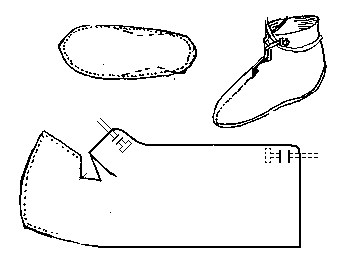

Scandinavian Ankle Boot
"Oseberg 303"
A turnshoe design that can be dated to the 850s AD.
This design is based on a description found in
Hald. Note that the seam running down the centerline of the vamp in the picture is decorative only.
Return to
[Index] or
[Next]
Footwear of the Middle Ages - Historical Shoe Designs/Number 51, by I. Marc Carlson. Copyright 1996
This page is given for the free exchange of information, provided the Author's Name is included in all future revisions, and no money change hands, other than as expressed in the Copyright Page.